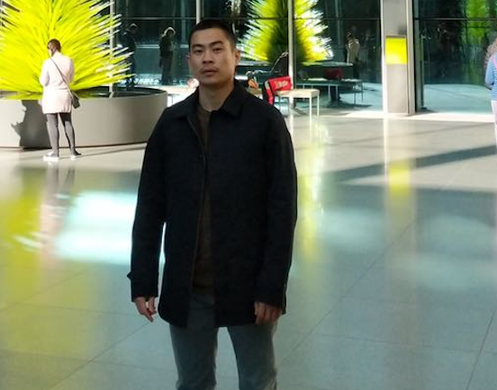

|  | Lin Zhang
|


Biography
I am a Ph.D. candidate in Computer Science department of University at Albany, SUNY. I am very fortunate to work with Prof. Petko Bogdanov. [Curriculum Vitae]
Research Interests
My research interests broadly span the areas of Data Mining and Machine Learning. Problems in my research are often rooted in many real-world systems, such as biomedical science, smart city, social networks, etc. How can we model latent structures in these data efficiently and effectively? My research aims to answer this question based on theories from matrix and tensor analysis, machine learning technologies. More specifically, I have been working on problems related to:
Subnetwork mining: discriminative subgraph learning in explict networks; community detection in implicit networks.
Time series analysis: stationary and non-stationary periodicity learning, anomaly detection, missing value imputation.
Network inference: inferring networks from multivariate time series.
News
May. 2019, I present "DSL: Discriminative Subgraph Learning via Sparse Self-Representation."
at SDM, Calgary, Canada.
Working Papers
Anomaly detection on multivariate time series
Network inference from multivariate time series
Publications
Conference
[An overlap community detection method * Name masked due to double blind review policy]
Alexander Gorovits, Lin Zhang, Ekta Gujral, Evangelos Papalexakis and Petko Bogdanov
The Web Conference(WWW), 2020. Submitted, under review.
Learning Period from Incomplete multivariate time Series
Lin Zhang, Alexander Gorovits, Wenyu Zhang, Petko Bogdanov.
SIAM International Conference on Data Mining(SDM), 2020. Submitted, under review.
Unsupervised iNstance and FeAture SElection for Network Data
Lin Zhang, Petko Bogdanov.
SIAM International Conference on Data Mining(SDM), 2020. Submitted, under review.
[A Network Signal Recognition method.* Name masked due to double blind review policy].
Wei Xiong, Lin Zhang, Petko Bogdanov, Mariya Zheleva.
IEEE International Conference on Computer Communications (INFOCOM), 2020. Submitted, under review.
PERCeIDs: Periodic Community Detection
Lin Zhang, Alexander Gorovits, Petko Bogdanov.
IEEE International Conference on Data Mining (ICDM), 2019. (Full paper; Acceptance rate: 9.08%). [code][BIB]
DSL: Discriminative Subgraph Learning via Sparse Self-Representation.
Lin Zhang, Petko Bogdanov.
SIAM International Conference on Data Mining(SDM), 2019. [poster][code][BIB]
Journal
M-Track: a new software for automated detection of grooming trajectories in mice. [code][BIB]
Reeves SL, Fleming KE, Zhang Lin, Scimemi A.
PLoS Comput Biol, Volume. 12, Issue. 9, Sept. 2016.
Image Denoising Algorithm Based on Non-local Regularized Sparse Representation. [BIB]
Liang Dong, Liang Zhao, Bao Wen-xia, Zhang Lin, Guo Cun-shan.
Journal of systems engineering and electronics, Volume. 35, Issue. 5, 2013.
Research and Implement of the Automatic Spectrum Collecting System Based on the Sun Tracking. [BIB]
Chen Xiaoning, Zhang Lin, Liu Jianguo, Zhang Tianshu, Yu Guizhou, Fu Wei
Acta Energiae Solaris Sinica., Volume. 34, Issue. 5, 2013.
Issued Patents
On-board solar spectrum collection system.
Chen xiaoning, Zhang Lin, Fu wei, Yu guizhou, Xu yadi, Zhu dazheng.
CN102156098A, 2011.
Preprint
An Efficient Approach for Cell Segmentation in Phase Contrast Microscopy Images
Lin Zhang (draft available)
Phase contrast Microscopy cell image Segmentation: A survey.
Lin Zhang(draft available)
Teaching Assistant
ICSI671/IINF671 Computer Vision/ ICSI 531 Data Mining
— Graduate level course at Computer Science department of UAlbany (Spring 2016, Spring 2015).ICSI404 Computer Organization/ ICSI310 Data Structures
— Undergraduate level course at Computer Science department of UAlbany (Fall 2014, Fall 2015, Spring 2016).
Services
(External) Reviewer for:Conferences: KDD(2019), CIKM(2019), WSDM(2019, 2020), SDM(2019, 2020), ICDM(2019), DSAA(2019), CVPR(2015, 2016, 2017), ICCV(2015, 2016, 2017)
Journals: TKDE(2019)
-
CVPR Workshop: Computer Vision for Microscopy Image Analysis (CVMI) (2016,2018).